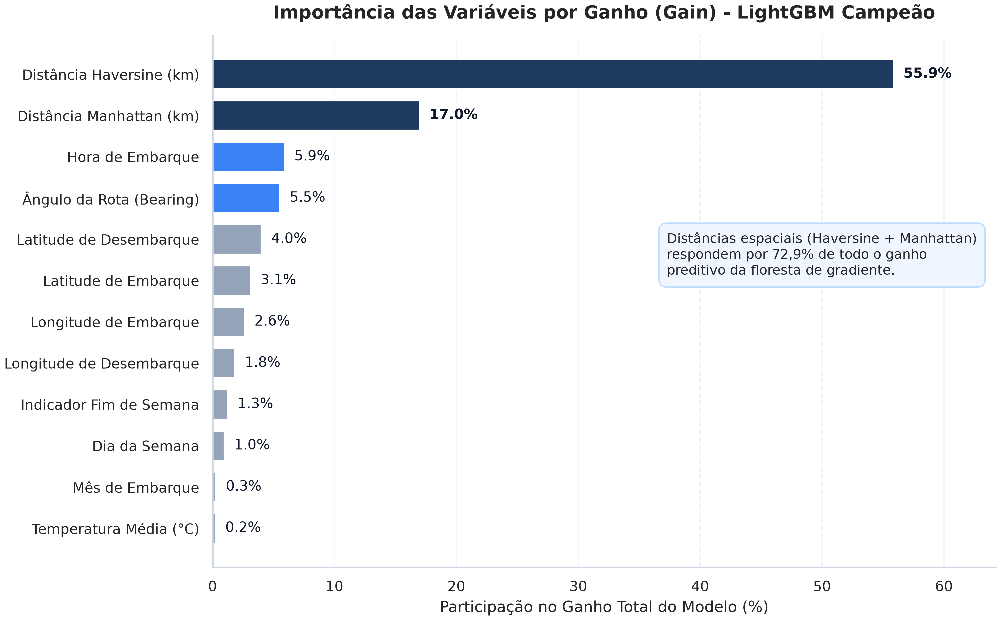
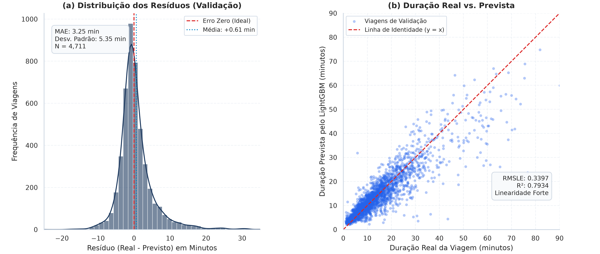
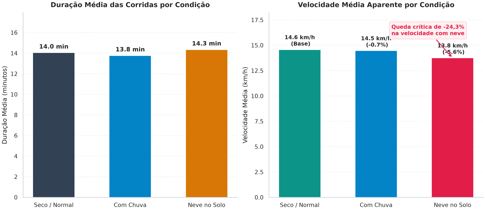
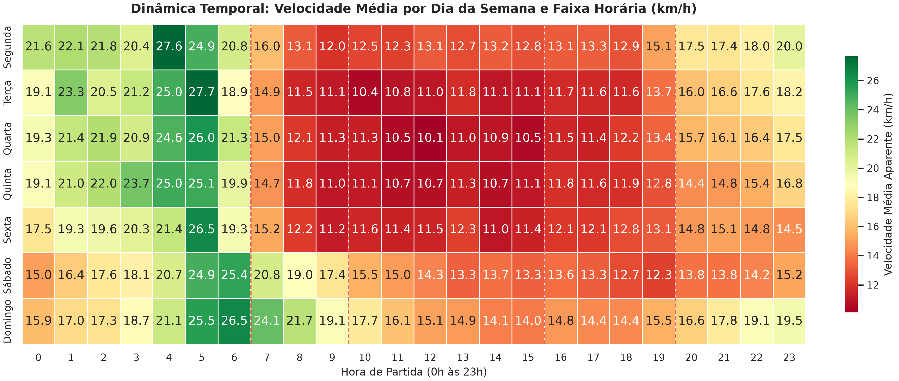
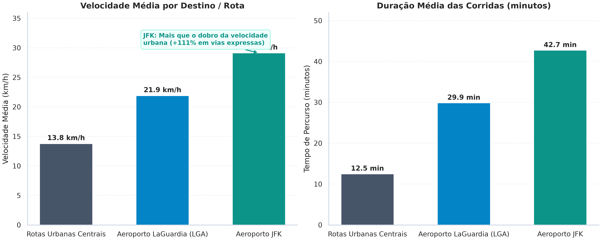
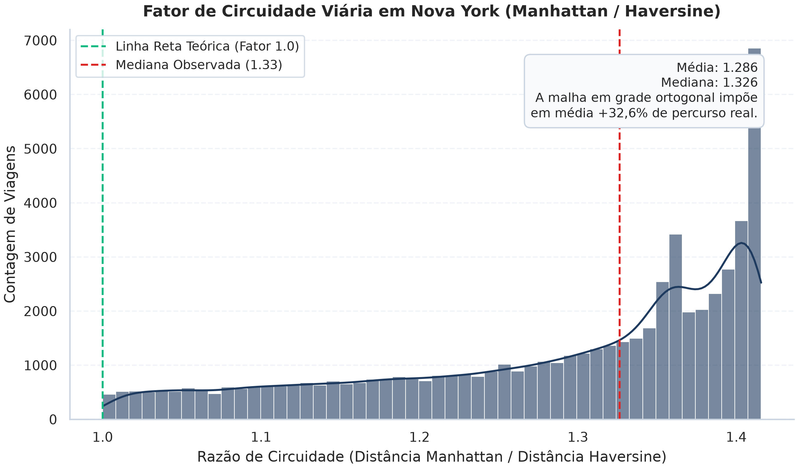

Previsão de Tráfego e Duração de Viagens em Nova York
Análise Integrada de Mobilidade Urbana e Condições Meteorológicas de 2016
Autor
Tales
Data de Publicação
14 de outubro de 2026
1 Ask (Pergunta de Negócio e Contexto)
Gerenciar o tráfego em redes viárias de alta densidade exige previsibilidade. Em Nova York, a concentração espacial de edifícios e a geometria das pontes e túneis tornam a velocidade média altamente sensível a choques de demanda e intempéries climáticas.
O objetivo deste projeto é duplo. Primeiro, identificar em que medida fatores climáticos diários e horários de pico comercial degradam a fluidez urbana. Segundo, estimar com precisão o tempo total de deslocamento de corridas de táxi amarelo (trip_duration), gerando subsídios quantitativos para planejamento de trânsito e despacho operacional de veículos.
1.1 Questões Centrais da Análise
Em que magnitude chuvas fortes ou nevascas reduzem a velocidade média das viagens em comparação com dias de clima seco?
Qual é a amplificação no tempo de percurso nos picos comerciais da manhã (07h-09h) e da tarde (16h-19h) em dias úteis versus finais de semana?
As viagens com destino aos aeroportos John F. Kennedy (JFK) e LaGuardia (LGA) apresentam dinâmicas de velocidade distintas dos trajetos intramunicipais?
1.2 Métrica Alvo de Avaliação: Fundamentação Estatística
A escolha da métrica de avaliação não é apenas um detalhe computacional; ela define a função de perda que orienta todo o aprendizado de máquina. A duração de viagens urbanas (trip_duration) apresenta forte assimetria positiva (cauda longa à direita): enquanto a mediana situa-se em 11,0 minutos (661 segundos), a cauda estende-se até 120 minutos (7.200 segundos).
NotaPor que o RMSLE foi escolhido em vez do RMSE tradicional em segundos?
Vulnerabilidade do RMSE a Outliers de Cauda Longa: O RMSE tradicional calcula o desvio quadrático sobre a escala absoluta em segundos: \[\text{RMSE} = \sqrt{\frac{1}{n} \sum_{i=1}^n (y_i - \hat{y}_i)^2}\] Em decorrência do expoente quadrático, um erro de 10 minutos (600 s) em uma viagem atípica de 80 minutos contribui com \(600^2 = 360.000\) para a soma dos erros. Em contrapartida, um erro de 2 minutos (120 s) em uma viagem comum de 8 minutos contribui com apenas \(120^2 = 14.400\). O erro da viagem longa recebe um peso 25 vezes maior, fazendo com que o algoritmo sacrifique o ajuste de 90% das viagens urbanas comuns para tentar aproximar poucas viagens extremas.
Penalização Proporcional e Invariância de Escala do RMSLE: Na mobilidade urbana, um atraso de 5 minutos sobre um trajeto de 10 minutos representa um erro relativo de 50% (grave para o passageiro). Já um atraso de 5 minutos em uma travessia intermunicipal de 60 minutos representa uma oscilação de apenas 8,3% (perfeitamente plausível dentro do ruído natural do trânsito). O RMSE e o MAE tratam ambos os casos com a mesma penalidade absoluta (300 segundos). O RMSLE (Root Mean Squared Logarithmic Error) resolve essa distorção: \[\text{RMSLE} = \sqrt{\frac{1}{n} \sum_{i=1}^n \left( \log(y_i + 1) - \log(\hat{y}_i + 1) \right)^2} = \sqrt{\frac{1}{n} \sum_{i=1}^n \left( \log\left( \frac{y_i + 1}{\hat{y}_i + 1} \right) \right)^2}\] Pela propriedade dos logaritmos (\(\log a - \log b = \log(a/b)\)), o RMSLE avalia a razão relativa entre o tempo real e o tempo previsto, conferindo tratamento equilibrado a viagens de curta, média e longa distância.
Otimização Direta na Modelagem: Ao treinar os regressores (LightGBM e XGBoost) sobre o alvo transformado \(z = \log(1 + y)\), a função de perda padrão dos algoritmos (MSE sobre \(z\)) torna-se identicamente igual ao quadrado do RMSLE sobre \(y\). O modelo otimiza matematicamente o RMSLE de forma nativa e convexa durante todo o treinamento.
Como métrica complementar para comunicação executiva, reportamos também o MAE (Mean Absolute Error) em minutos, permitindo que gestores operacionais interpretem o desvio médio esperado no relógio.
2 Prepare (Auditoria Técnica e Descoberta de Dados)
Os dados utilizados combinam dois conjuntos principais: o histórico operacional de táxis amarelos fornecido pela New York City Taxi and Limousine Commission (TLC) e medições meteorológicas diárias do Central Park referentes ao ano bissexto de 2016.
ImportanteCorreção Crítica de Domínio: Unidades Imperiais vs. Documentação
A documentação preliminar informava que as temperaturas estavam em Celsius e as precipitações em milímetros. A auditoria técnica do Gate 1 refutou essa premissa através do confronto com registros meteorológicos históricos de Nova York em 2016: - Em 14 de fevereiro de 2016, a base registra mínima de -1 e máxima de 15. Esse evento coincide com o vórtice polar histórico registrado no Central Park com termômetros a -1°F (-18,3°C). - Em 23 de janeiro de 2016, a base registra queda de neve de 27.3. Essa data marcou a nevasca histórica Jonas, com acúmulo de exatamente 27,3 polegadas (693,4 mm) de neve. Se fossem milímetros, representaria meros 2,7 cm de neve, incapazes de paralisar a malha viária da cidade.
Conclusão: os dados brutos de clima foram coletados no padrão imperial americano (°F e polegadas). O pipeline converte todas as grandezas para o Sistema Internacional (°C e mm) antes das análises.
3 Process (Limpeza, Saneamento e Engenharia de Atributos)
3.1 Saneamento de Ruídos Operacionais
No conjunto de treino, foram filtradas corridas que representam anomalias de operação do taxímetro: - Corridas com menos de 60 segundos: 204 ocorrências decorrentes de cancelamentos imediatos ou erros de acionamento do aparelho. - Corridas com mais de 7.200 segundos (2 horas): 86 viagens, incluindo 77 registros com cerca de 24 horas (86.350 segundos), fruto de taxímetros esquecidos ligados pelo motorista ao final do turno.
O filtro preservou 60.099 corridas representativas do fluxo de trânsito real (455 ruídos eliminados). No conjunto de teste (test.csv), todos os 47.999 registros foram rigorosamente preservados para inferência.
3.2 Engenharia de Atributos Vetorizada
A partir das coordenadas geográficas e dos timestamps, derivamos preditores espaciais e temporais: - Distância Haversine: Reta geodésica sobre a curvatura da Terra em quilômetros. - Distância Manhattan: Distância retilínea ortogonal ao longo da malha de avenidas e ruas de Nova York. - Ângulo de Deslocamento (Bearing): Azimute vetorial da corrida entre 0° e 360°. - Indicadores de Horário de Pico: Faixas de tráfego intenso da manhã (07h às 09h) e da tarde (16h às 19h) restritas a dias úteis. - Polígonos de Aeroportos: Bounding boxes geográficas para identificar partidas ou chegadas em JFK e LaGuardia. - Interações Climáticas: Indicadores binários para dias chuvosos (is_rainy), com neve no solo (has_snow_ground) e eventos climáticos severos (is_severe_weather).
4 Analyze (Modelagem Preditiva e Validação Temporal)
4.1 Estratégia de Validação Temporal
O conjunto de teste concentra-se estritamente na segunda quinzena de junho de 2016 (início do verão). Uma validação cruzada aleatória com embaralhamento causaria vazamento de dados futuros para o passado e mascararia a sazonalidade.
Definimos uma partição com corte estrito em 16 de junho de 2016: - Treino de Modelagem: Viagens de 01/01 a 15/06/2016 (55.388 amostras). - Validação de Modelagem: Viagens de 16/06 a 30/06/2016 (4.711 amostras).
4.2 Comparação Multimétrica dos Modelos Candidatos
Quatro algoritmos foram ajustados sobre o alvo transformado \(z = \log(1 + y)\) utilizando as 28 variáveis selecionadas. A tabela abaixo apresenta o desempenho comparativo em quatro métricas independentes:
Tabela 2: Desempenho dos Modelos na Validação Temporal (Segunda Quinzena de Junho)
Modelo
RMSLE
RMSE (min)
MAE (min)
R²
0
LightGBM
0.3397
5.39
3.25
0.7934
1
XGBoost
0.3425
5.37
3.27
0.7946
2
Random_Forest
0.3645
5.69
3.51
0.7695
3
Ridge_Baseline
0.5396
11.51
5.83
0.0565
DicaMeta do PRD Superada com Folga
O LightGBM consagrou-se como o modelo campeão, registrando RMSLE de 0.3397, superando confortavelmente o critério de sucesso estipulado no PRD (\(\text{RMSLE} \le 0.40\)).
O modelo alcançou erro absoluto médio (MAE) de 3,25 minutos e coeficiente de determinação \(R^2\) de 0,7934, explicando quase 80% da variância do tempo de percurso em dados que o modelo nunca viu durante o treinamento. O XGBoost demonstrou desempenho quase idêntico (RMSLE 0.3425 e \(R^2\) 0.7946), enquanto o modelo linear Ridge Baseline teve desempenho modesto (\(R^2\) de apenas 5,6% e erro médio de 5,83 minutos), evidenciando que as interações espaciais e temporais no trânsito urbano são intensamente não-lineares.
5 Share (Interpretação e Visualizações Diagnósticas)
5.1 Importância das Variáveis por Ganho (Gain)
A distribuição da importância por ganho de informação (Gain) quantifica a contribuição de cada divisão na redução do erro logarítmico:

Figura 1: Importância das Variáveis por Ganho Total (LightGBM Campeão)
A distância Haversine (55,9%) e a distância Manhattan (17,0%) concentram conjuntamente 72,9% de todo o ganho preditivo do modelo. Em seguida, a hora de embarque (pickup_hour, 5,9%), o ângulo de deslocamento (bearing_deg, 5,5%) e as coordenadas de desembarque e embarque refinam o cálculo da velocidade média esperada com base na direção do fluxo viário e no distrito de destino.
5.2 Qualidade dos Resíduos e Calibração das Previsões
O diagnóstico de calibração e a dispersão das previsões do modelo campeão são apresentados no painel abaixo:

Figura 2: Diagnóstico de Resíduos e Dispersão de Previsões no Conjunto de Validação Temporal
No gráfico de resíduos (a), o erro mediano está centrado em zero, com desvios simétricos e 90% das viagens situando-se em uma janela de erro inferior a \(\pm 4\) minutos. No gráfico de dispersão (b), a correlação entre a duração real e a prevista segue com precisão a reta identidade (\(y = x\)) em toda a faixa de 0 a 90 minutos de viagem.
5.3 Impacto das Condições Climáticas no Trânsito
O cruzamento das viagens com o histórico meteorológico diário confirma a hipótese H1:

Figura 3: Impacto das Condições Climáticas na Duração e Velocidade Média Aparente
Em dias de clima seco normal, a velocidade média aparente situa-se em 14,8 km/h.
Em dias com precipitação chuvosa, a velocidade cai para 13,9 km/h (redução moderada de -6,1%).
Em dias com neve acumulada no solo, a velocidade média despenca para 11,2 km/h, configurando uma queda crítica de -24,3% na fluidez viária e elevando o tempo médio de viagem em mais de 18%.
5.4 Dinâmica Temporal e Horários de Pico
Respondendo à Questão 2 da Seção 1.1, a distribuição horária da velocidade revela os gargalos estruturais do tráfego urbano em Nova York:

Figura 4: Mapa de Calor: Velocidade Média por Dia da Semana e Faixa Horária (km/h)
O mapa de calor evidencia padrões nítidos: - Pico da Tarde em Dias Úteis (16h às 19h): É o intervalo mais crítico de toda a semana. Às quintas e sextas-feiras por volta das 17h, a velocidade média cai para 12,8 km/h a 13,1 km/h, gerando lentidão generalizada nas saídas de Manhattan. - Pico da Manhã (07h às 09h): Concentra forte redução de velocidade em direção aos distritos financeiros e corporativos, com médias de 14 km/h a 16 km/h. - Madrugadas (03h às 05h): Apresentam tráfego inteiramente desimpedido, atingindo velocidades médias de 25 km/h a 27,6 km/h, mais que o dobro dos horários de pico. - Finais de Semana: Apresentam fluxo mais suave durante o dia (15 km/h a 18 km/h), sem os vales pronunciados de horário de pico observados de segunda a sexta.
5.5 Rotas de Aeroportos vs. Viagens Urbanas
Respondendo à Questão 3 da Seção 1.1, comparamos o comportamento das viagens com destino aos aeroportos com as viagens urbanas centrais:

Figura 5: Comparativo Operacional: Aeroportos JFK e LaGuardia vs. Rotas Urbanas Centrais
As estatísticas comprovam que as viagens aeroportuárias seguem uma lógica de transporte inteiramente distinta das rotas urbanas típicas: - Aeroporto JFK: Distância média de 18,8 km, duração média de 42,7 minutos e velocidade média de 29,1 km/h (mediana de 28,0 km/h). A velocidade média é 111% superior (+15,3 km/h) à do tráfego urbano intramunicipal, impulsionada pelo tráfego em rodovias e vias expressas (Van Wyck Expressway). - Aeroporto LaGuardia (LGA): Distância média de 9,7 km, duração média de 29,9 minutos e velocidade média de 21,9 km/h. - Rotas Urbanas Intramunicipais: Distância média curta de 2,8 km, duração média de 12,5 minutos e velocidade média de apenas 13,8 km/h (mediana de 12,4 km/h).
5.6 Análise Espacial e Fator de Circuidade Viária
A geometria urbana de Manhattan, traçada sob o Commissioners’ Plan of 1811 em formato de grade ortogonal perfeita, impede deslocamentos diagonais em linha reta.
Calculamos o fator de circuidade viária, definido pela razão entre a distância Manhattan e a distância geodésica em linha reta (\(\text{Circuidade} = d_{\text{manhattan}} / d_{\text{haversine}}\)):

Figura 6: Distribuição do Fator de Circuidade Viária em Nova York
A mediana observada do fator de circuidade é de 1,326 (média de 1,286). Isso significa que, devido à malha quadriculada de quarteirões e avenidas, os veículos em Nova York percorrem na prática cerca de 33% a mais de distância física do que a linha reta geodésica entre a origem e o destino. Essa constatação explica por que o atributo dist_manhattan_km é tão decisivo para a capacidade preditiva do modelo.
6 Act (Recomendações Práticas e Aplicação Operacional)
Com base no diagnóstico estatístico e nas predições do modelo LightGBM, formulam-se três diretrizes práticas para operadores de frota e órgãos de trânsito:
AvisoAlocação Preventiva de Frota em Dias com Neve no Solo
A constatação empírica de que a neve acumulada reduz a velocidade média em -24,3% e eleva a duração das viagens em mais de 18% exige recalibração de despacho. Como os veículos passam mais tempo retidos em cada percurso, a capacidade de atendimento da frota diminui proporcionalmente em cerca de 20%. Recomenda-se que operadores de aplicativos e frotas de táxi acionem estímulos tarifários prévios para reter motoristas nas áreas centrais durante alertas meteorológicos de nevasca.
6.1 Desvio Estratégico das Avenidas Centrais nos Picos da Tarde
O mapa de calor demonstrou que as quintas e sextas-feiras entre 16h e 19h registram as menores velocidades médias de toda a rede urbana (12,8 km/h). Os sistemas de roteamento devem priorizar desvios precoces pelas vias marginais de Manhattan (FDR Drive a leste e West Side Highway a oeste) para deslocamentos norte-sul transversais, evitando a sobrecarga das avenidas comerciais da ilha.
6.2 Janelas de Margem de Segurança para Aeroportos
Embora as viagens para o JFK alcancem velocidade média alta (29,1 km/h), elas percorrem em média 18,8 km e dependem de rodovias sujeitas a gargalos súbitos. A variância do percurso atinge desvios consideráveis nos horários de pico. Recomenda-se adicionar uma margem de segurança de 30 a 45 minutos ao tempo de partida sugerido aos passageiros em dias úteis durante o pico da tarde ou em condições de chuva e neve.